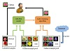

Lei Huang received his BSc and PhD degrees under supervision of Prof.
, respectively in 2010 and 2018, at the School of Computer Science and Engineering, Beihang University, China. From 2015 to 2016, he visited the Vision and Learning Lab, University of Michigan, Ann Arbor, as a joint PhD student supervised by Prof.
. His current research mainly include normalization techniques (involving methods, theories and applications) in training DNNs. He also has wide interests in deep learning theory (representation & optimization) and computers vision tasks. He serves as a reviewer for the top conferences and journals such as CVPR, ICCV, ECCV, NIPS, AAAI, IJCAI, JMLR, IJCV, TNNLS, etc.
Publications
On the Number of Linear Regions of Convolutional Neural Networks
Huan Xiong, Lei Huang, Mengyang Yu, Li Liu, Fan Zhu, Ling Shao
ICML 2020
Controllable Orthogonalization in Training DNNs
Lei Huang, Li Liu, Fan Zhu, Diwen Wan, Zehuan Yuan, Bo Li, Ling Shao
CVPR 2020 (Oral)
An Investigation into the Stochasticity of Batch Whitening
Lei Huang, Lei Zhao, Yi Zhou, Fan Zhu, Li Liu, Ling Shao
CVPR 2020 (Oral)
An Efficient Agreement Mechanism in CapsNets By Pairwise Product
Lei Zhao, Xiaohui Wang, Lei Huang
ECAI 2020
Iterative Normalization: Beyond Standardization towards Efficient Whitening
Lei Huang, Yi Zhou, Fan Zhu, Li Liu, Ling Shao
CVPR 2019
Collaborative Learning of Semi-Supervised Segmentation and Classification for Medical Images
Yi Zhou, Xiaodong He, Lei Huang, Li Liu, Fan Zhu, Shanshan cui, Ling Shao
CVPR 2019
Decorrelated Batch Normalization
Lei Huang, Dawei Yang, Bo Lang, Jia Deng
CVPR 2018
Orthogonal Weight Normalization: Solution to Optimization over Multiple Dependent Stiefel Manifolds in Deep Neural Networks
Lei Huang, Xianglong Liu, Bo Lang, Admas Wei Yu, Bo Li
AAAI 2018 (Oral), (arXiv:1709.06079)
Projection Based Weight Normalization for Deep Neural Networks
Lei Huang, Xianglong Liu, Bo Lang, Bo Li
preprint (arXiv:1710.02338)
Block-normalized Gradient Method: an Empirical Study for Training Deep Nerual Network
Adams Wei Yu, Lei Huang, Qihang Lin, Ruslan Salakhutdinov, Jaime Carbonell.
preprint (arXiv:1707.04822)
Centered Weight Normalization in Accelerating Training of Deep Neural Networks
Lei Huang, Xianglong Liu, Yang Liu, Bo Lang, Dacheng Tao
IEEE ICCV, 2017
DGCNN: Disordered Graph Convolutional Neural Network Based on the Gaussian Mixture Model
Bo Wu, Yang Liu, Bo Lang, Lei Huang
Neurocomputing, 2018 (arXiv:1712.03563)
Learning Joint Multimodal Representation Based on Multi-fusion Deep Neural Networks
Zepeng Gu, Bo Lang, Tongyu Yue, Lei Huang
The 24th International Conference on
Neural Information Processing (ICONIP 2017), (Oral)
Query-adaptive hash code ranking for large-scale multi-view visual search
Xianglong Liu, Lei Huang, Cheng Deng, Bo Lang, Dacheng Tao
IEEE Transactions on Image Processing (TIP). 2016
A Novel Rotation Adaptive Object Detection Method Based on Pair Hough Model
Yang Liu, Lei Huang, Xianglong Liu, Bo Lang
Neurocomputing, 2016
Efficient Segmentation for Region-based Image Retrieval Using Edge Integrated Minimum Spanning Tree
Yang Liu, Lei Huang, Siqi Wang, Xianglong Liu, Bo Lang
ICPR. 2016
Multi-View Complementary Hash Tables for Nearest Neighbor Search
Xianglong Liu, Lei Huang, Cheng Deng, Jiwen Lu, Bo Lang
IEEE ICCV, 2015

Graph-based Active Semi-supervised Learning: a New Perspective for Relieving Multi-class Annotation Labor
Lei Huang, Yang Liu, Xianglong Liu, Xindong Wang, Bo Lang
IEEE ICME, 2014
Online Semi-Supervised Annotation via Proxy-based Local Consistency Propagation
Lei Huang, Xianglong Liu, Binqiang Ma, Bo Lang
Neurocomputing, 2014
Query-Adaptive Hash Code Ranking for Fast Nearest Neighbor Search
Tianxu Ji, Xianglong Liu, Cheng Deng, Lei Huang, Bo Lang
ACM MM (short paper), 2014
MIAPS: a web-based system for remotely accessing and presenting medical images
Hualei Shen, Dianfu Ma, Yongwang Zhao, Hailong Sun, Sujun Sun, Rongwei Ye, Lei Huang, Bo Lang, Yan Sun
Computer Methods and Programs in Biomedicine, 2014
Efficient Semi-supervised Annotation with Proxy-based Local Consistency Propagation
Lei Huang, Yang Wang, Xianglong Liu, Bo Lang
IEEE ICME, 2013
BUAA AUDR at ImageCLEF 2012 Photo Annotation Task
Lei Huang, Yang Liu
CLEF Online Working Notes, 2012
AUDR: An Advanced Unstructured Data Repository
Xianglong Liu, Bo Lang, Wei Yu, Junwu Luo, Lei Huang
The 6th International Conference on Pervasive Computing and Applications (ICPCA6) South Africa, 2011